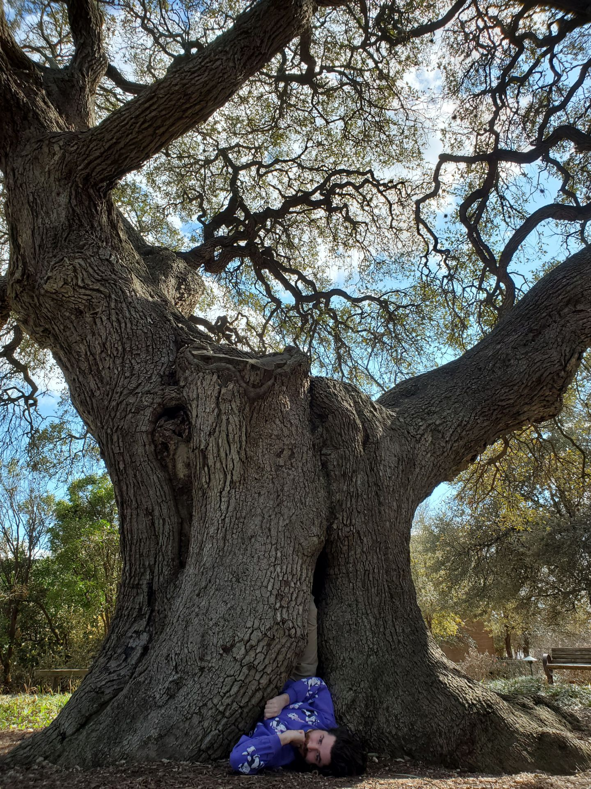

I hope you dig mees.

A little bit about my roots, originally I grew up in
Las Vegas. I spent a lot of my childhood driving dune buggies and dirt bikes out in the desert. Or I was hiking, enjoying
the landscape of Red Rock Canyon. I went to college at the University of Nevada, Las Vegas (UNLV) where I studied Civil Engineering.
Currently I'm living in Houston and I've been here almost six years now.
I was working in the Civil Engineering field for about five years when I found it wasn't the right fit for me.
So I decided that I wanted to pivot my career more into the tech industry.
I'm really excited to start the program with Digital Crafts to make that a reality!